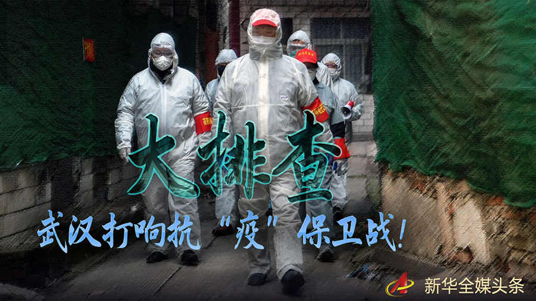
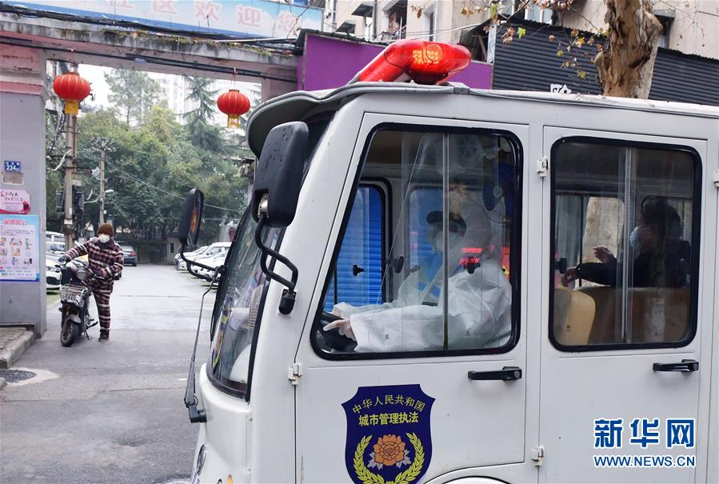
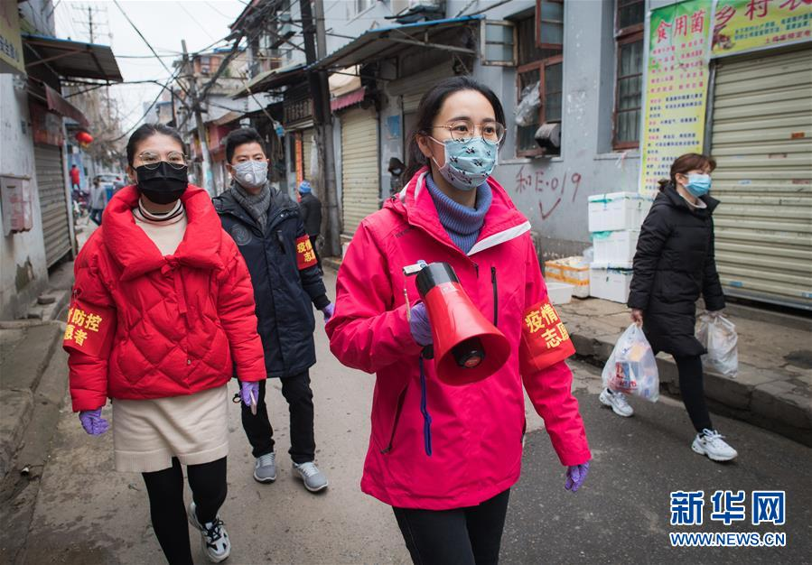
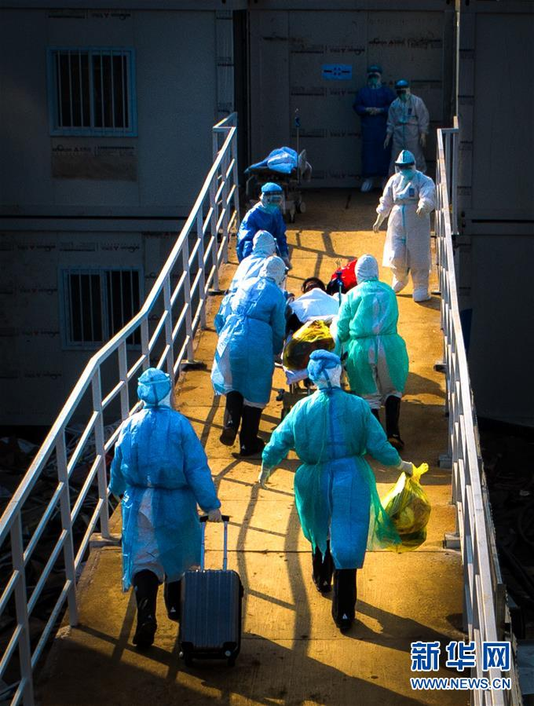
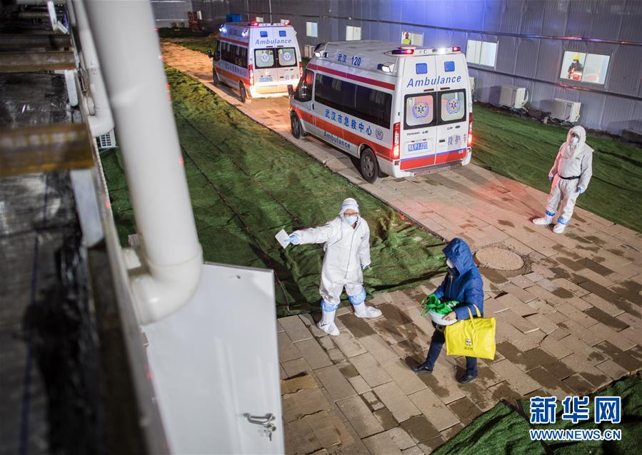
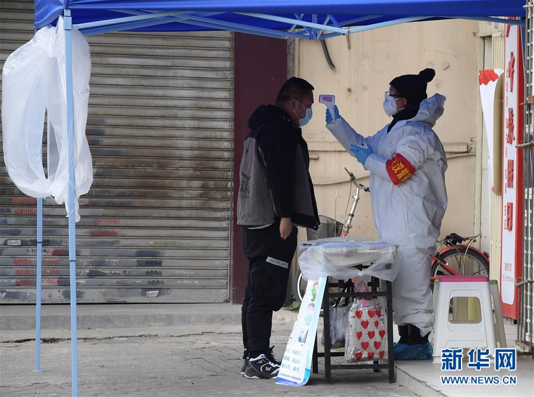
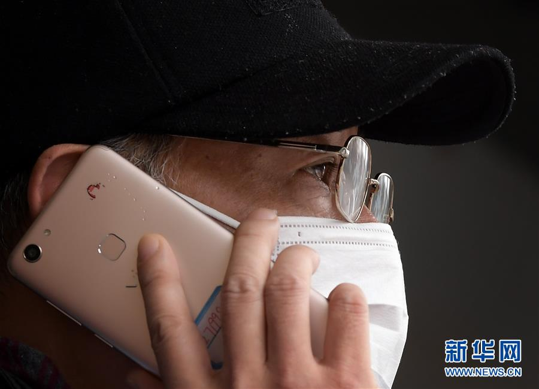
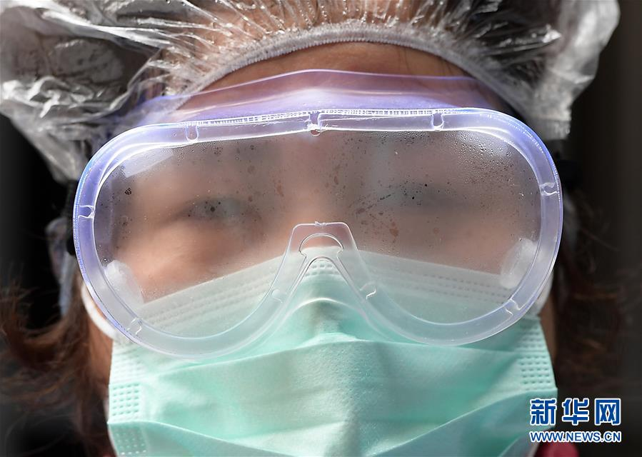
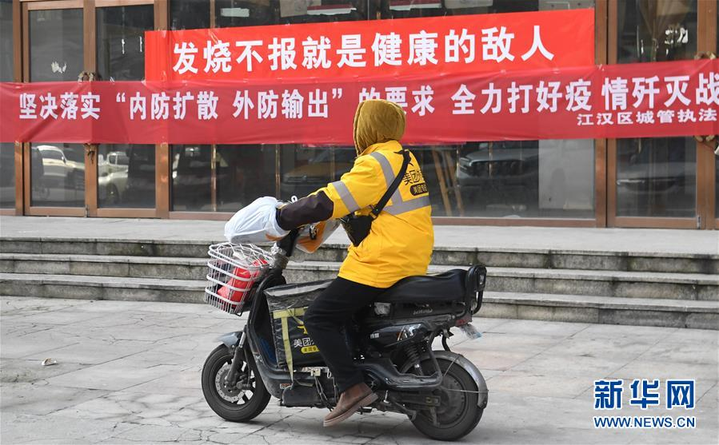
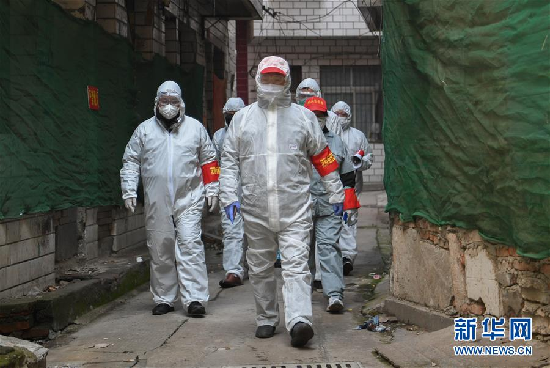

题：大排查，武汉打响抗“疫”保卫战！
遏制疫情，最主要的方式是切断源头，阻断传播，最重要的战场是社区。
8日，中央指导组在武汉发出动员令，不折不扣落实“四类人员”分类集中管理措施，切实推进“应收尽收、不漏一人”，吹响了阻断疫情扩散的总攻战号角。

2月10日，一辆转运车在武汉市江汉区德望社区接到一位确诊患者送往“方舱医院”。
两日来，武汉城区1100多个社区开展拉网式、网格式排查，超过3万名干部职工下沉社区战“疫”。
一场保卫武汉的抗“疫”人民战争、总体战、阻击战已全面打响。

2月7日，中华路街道西城壕社区党委书记翁文静（右二）与志愿者柳莹（左一）、张琦（左二）上街进行防疫宣讲。
全城动员 全力推进
湖北和武汉是疫情防控的重中之重，是打赢疫情防控阻击战的决胜之地。
10日上午9时，武汉市江汉区北湖街道德望社区电话响起，电话那头传来紧促的声音：“熊主任，我的核酸检测结果出来了，阳性。”
嘱咐几句注意事项，挂上电话后，德望社区居委会副主任熊威马上向街道汇报情况，请求安排车辆和人员马上转运这名确诊患者。
看到一辆经过改装、消毒的小巴停在了患者所在小区门口，患者自己坐上车被送往附近“方舱医院”后，熊威悬着的心才平缓下来。他说，随着应收尽收的快速推进，“患者确诊、收治这几天明显感觉节奏快了起来”。

2月4日，在武汉火神山医院，医护人员将患者送入病房（无人机照片）。
武汉市动员力量，调动救护车，改装公交车、电动车等承担病患转运任务。
作为新冠肺炎疫情核心区，武汉的疫情防控目前正处于最关键、最紧急、最严峻的关头。
应收尽收，刻不容缓！为贯彻落实习近平总书记重要指示精神，连日来，武汉市落实对确诊患者、疑似病例、发烧居民、亲密接触者“四类人员”分类集中管理措施，全力以赴，全面推进。
9日上午，武汉再次动员推进全市1100多个社区危重病人收治、疑似患者隔离、核酸检测等工作，将排查出的所有确诊患者、疑似患者全部集中收治、分类隔离。这是做到应收尽收、应检尽检的重要步骤。
——增加床位数量。这是提高收治能力的核心。经过改造后，湖北省委党校一栋学员楼成为新冠肺炎的医学集中隔离观察点。工作人员介绍，目前这儿200个床位都已收满，“根据患者病情变化，每天都有约20个转出和新接收的确诊和疑似病例患者”。

2月8日，在武汉雷神山医院，患者步入病房。
随着雷神山、火神山医院相继收治确诊患者，目前武汉市收治重症和危重症患者床位数达到1.14万张。另外由会展中心、体育馆改建的“方舱医院”和多所学校改造的收治点，将陆续增加上万张床位，收治确诊轻症患者。
——增派医护人员。元宵节当天，支援武汉的第二批青海医疗队队员韩金艳经过三天培训，和其他90多名医护人员进驻新洲区方舱医院上岗。这个由羽毛球馆改造而成的方舱医院，最多可以容纳200名确诊患者。这些轻症患者的基础护理工作都由韩金艳他们承担。
中央指导组陆续从全国调集100余支队伍1.1万余名优秀医务人员驰援武汉。目前共有超过9万名医护人员，奋战在武汉疫情防控一线。武汉市还通过各种渠道扩充医护力量，一些城区倡议65岁以下的离退休和个人医务工作者投身抗击疫情战场，相关部门将提供周全的防控措施和医疗物资。

2月10日，武汉市园林局支援德望社区的一位下沉工作人员在值守的小区门口为来访者测量体温。
——扩能核酸检测。前期受试剂盒、采样点数量限制，核酸检测也需要排队等候，导致大量疑似患者无法确诊。通过不断扩大核酸检测机构，目前武汉市核酸检测能力从最初每日200份，提升到现在8000份。
临近雷神山医院的武汉“火眼”实验室近日开始试运行，这个为疫情防控专门新建的实验室将增加日均1万通量的核酸检测能力，平均经过4—6个小时可以获得检测结果。据实验室相关负责人介绍，“随着实验室检测能力的释放，将有效缓解检测难问题”。
记者同时了解到，尽管目前收治能力大幅提升，目前仍有部分确诊和疑似患者尚未被收治，做到不漏一人还需付出艰苦努力。
拉网排查 干部下沉
社区排查是“四类人员”分类集中收治、实现应收尽收最基础的关口。
江汉区唐家墩街西桥社区是一个1.6万余人口的“万人社区”，距疑似疫源区华南海鲜市场仅2公里左右，受疫情影响较为严重。
记者见到西桥社区党委书记董守芝，长时间连续值守，承担安抚居民情绪、组织社区消毒、安排物资发放等林林总总的工作，每天要接听上百个电话，她忙得像个“陀螺”。“所有确诊和疑似患者送至定点医院和隔离点后，社区各项工作也逐步理顺了。”她说。

2月10日，武汉市江汉区德望社区居委会副主任熊威向街道请求安排车辆和人员转运一名确诊患者。
董守芝所在社区实际住户1.3万人。通过“地毯式”排查，组织居民测量体温，已将36名确诊患者全部外送至医院，所有疑似病患送至隔离点。
武汉市武昌区委书记刘洁介绍，社区筛查出居民发热情况后，由社区卫生服务中心通过分级诊疗判断是否送发热门诊就诊，并提出隔离建议。
“疑似患者由街道护送到隔离点后，将第一时间进行核酸采样检测，并实施对症治疗。检测结果出来后，阳性患者轻症进方舱医院，重症进定点医院。”刘洁说，所以社区是实现“应收尽收”的第一道闸口，至关重要。
湖北省委副书记、武汉市委书记马国强10日晚在湖北新冠肺炎疫情防控工作例行新闻发布会上介绍，武汉市着力开展全民健康普查，截至9日，武汉市一共排查了3371个社区、村；按户数计算，累计排查了421万户、1059万人。

2月10日，下沉到德望社区的武汉市园林局职工杨丽青在调试播放防疫事项的扩音喇叭。
从1月27日大年初三开始，洪山区司法局办公室主任科员杨端华每天都“改行”珞南街广八路社区“上班”：每天背着20斤重的药水桶喷壶，对社区10个单元的居民楼逐层打药消杀。
“每个单元都是7层，共111级台阶，这些天下来对这儿都很熟啦。”杨端华说，在司法局他主要负责档案工作，上下班很规律。现在承担消杀工作之外，社区忙不开时来搭把手，加班成了常态。
目前，武汉市共有市直机关、市属国有企业等单位的1.67万名干部职工，下沉到疫情较重的社区，统一编入街道社区工作队；15个城区统筹区直单位和街道(乡镇)共计1.77万名党员干部，全覆盖联系包保社区(村)，总计3.4万名干部职工，下沉社区共同抗“疫”。
由于社区居委会党委书记感染确诊，副书记出现疑似症状，一名党委委员是亲密接触者被隔离，一段时间内，德望社区全靠熊威带领8名社区工作者担负起5600多名居民的疫情防控和应急工作。这次30多位干部下沉到位后，“可帮我们大忙了”，熊威说。

2月10日，从辖区返回德望社区居委会的工作人员护目镜上已起雾。
一周前，武汉市园林局职工杨丽青撇下两岁的儿子来到德望社区，戴起红袖标、拿着小喇叭，对进出人员测温、登记，当起社区楼栋“守门员”。由于家离社区30多公里，加上交通管制，杨丽青只能住在单位办公室，晚上睡沙发。
在下沉干部的帮助下，德望社区已排查出辖区的26例确诊和疑似患者，完成隔离收治。熊威说：“经过前段时间的持续爆发后，现在社区新增发热、疑似病例都在回落，疫情防控效果逐步体现出来了。”
集中收治 摸清底数 阻断传播
青山区工人村街青和居社区党总支书记桂小妹虽然每晚睡不到4个小时，但完成了连日来“拉网式”排查，确认“四类人员”人数后，松了一口气。
春节以来，青和居社区实际居住人数有8042人，其中4例确诊患者，17例疑似病例。这21人都已经全部送至医院、隔离点，实现应收尽收。
“将‘四类人员’识别出来，摸清底数，相应收治或隔离后，社区工作重点就是做好消毒和防范工作。”桂小妹说。
居民可以通过手机应用主动上报自查和求助信息（2月10日摄）。
控制源头、切断传播途径，是传染病防控的治本之策。应收尽收，集中收治，意味着锁定疫情防控主要目标群体，为摸清“敌情”，配置资源，从“阵地战”转为“歼灭战”打下基础。
“大疫时期最有效的办法，一是控制传染源、二是救治患者。”中国工程院副院长、中国医学科学院院长王辰说，如果大量轻症患者居家或疑似病人在社区游动，会成为疫情扩散的主要源头，“这是传染源控制不力，是社会和专业干预不够的表现”。

2月9日，一位快递员在武汉市江汉区唐家墩街西桥社区送货。
社区，是阻断疫情扩散最有效的防线。武汉市按照“应下尽下、就近就便”的原则，充分整合市直机关企事业单位人员力量，以基层党支部为单位，化整为零、对口支援、下沉社区，充实疫情防控一线干部力量。
武汉市委组织部相关负责人介绍，全市中心城区各级党组织，除应急指挥、医疗卫生、公安交管等承担紧急防控任务的单位之外，在确保本单位正常运行情况下，基层党支部和党员要全部下沉到社区，听从社区党组织安排。

2月9日，武汉市江岸区花桥街道志愿者在对街区进行排查。
“干部下沉、夯实社区，基层筛查、集中收治，各方支援，形成合力，推进‘四类人员’分类集中收治，意味着救治工作逐步迈向有序，逐步形成有序的梯度管理。”华中科技大学国家治理研究院副院长杜志章说。
从一个患者，到一个家庭，到一个小区，再到一个片区……总攻号吹响了，一个个社区正日益变成防疫的坚强堡垒，一道道抗疫的人民防线正在形成。
与疫魔的胶着对垒，艰苦鏖战，将随着保卫战战力的增强而被战胜。
武汉保卫战，战事方殷，硝烟正浓……（